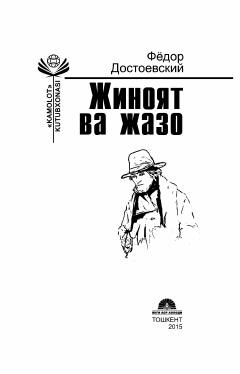

JVRaskolnikovning jinoyati va uning ruhiy jazosi haqida buyuk roman.
Bu kitob Fyodor Dostoevskiyning mashhur 'Jinoyat va jazo' romanining o'zbek tilidagi tarjimasi bo'lib, 2015-yilda 'Yangi asr avlodi' nashriyoti tomonidan chop etilgan. Roman sobiq talaba Raskolnikovning qashshoqlikdan qutulish maqsadida qilgan dahshatli jinoyati va uning ruhiy azoblari haqida hikoya qiladi. Asar insonning vijdon, adolat va gunoh mavzularini chuqur psixologik tahlil orqali yoritadi.